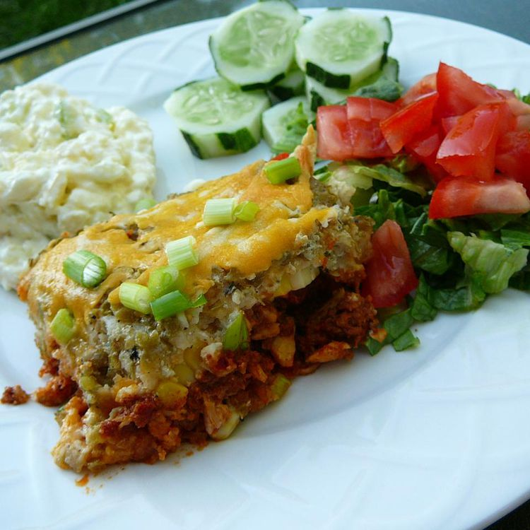

Chilaquiles
Home

- ¼ pound chorizo
- 2 skinless, boneless chicken breast halves, cut into 1-inch cubes
- ½ (10 ounce) bag tortilla chips
- 1 cup frozen corn kernels
- 1 (19 ounce) can green enchilada sauce
- 1/2 teaspoon ground nutmeg
- ½ cup sour cream
- 2 cups shredded Monterey Jack cheese
Steps
- Preheat the oven to 400 degrees F (200 degrees C).
- Heat a large skillet over medium-high heat. Cook and stir chorizo in the hot skillet until crumbly, about 5 minutes. Add chicken; cook and stir until chicken is cooked through and no longer pink in the center, about 10 minutes.
- Spread 1/2 of the tortilla chips over the bottom of a casserole dish; top chips with chicken mixture. Sprinkle corn evenly over chicken mixture and layer remaining chips on top. Whisk green enchilada sauce and sour cream in a mixing bowl; pour over chips and top with shredded Monterey Jack cheese.
- Bake chilaquiles in the preheated oven until casserole is bubbly and the chips begin to brown, 15 to 20 minutes.